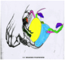

A Walking Tour Through the Clitoris!
by
Rebecca Chalker, PhD ©2013
Illustrations by Suzann Gage,
from A New View of A Woman’s Body, ©1981, 1991 Federation of Feminist Health Centers www.fwhc.org
The Ancient Greek aphorism, "Know yourself," was inscribed on the Temple of Apollo at Delphi. Whatever this bit of wisdom applied to in the past, in a certain respect, it applies to sexuality today.
The fact that many women have difficulties or dissatisfactions with sex in relationships or casual encounters is widely understood by sex therapists and researchers. Much advice is dispensed, including suggestions about better communication, variations in sexual routine, incorporating vibrators into partner sex, watching sexy videos to enhance desire and exploring what feels good through masturbation. But one suggestion that isn’t often included is to become intimately acquainted with your genital anatomy. This “Walking Tour Through the Clitoris” details the 18 parts of the clitoral complex and describes how they work to produce pleasure and orgasm.
We’re talking about the clitoris here, but there's more to it than that exquisitely sensitive pea-sized nubbin that everyone calls the clitoris. This explosive little bean is only the tip of a powerfully responsive organ system with at least 18 separate parts that function together to produce pleasure and orgasm. Of course, orgasm is not the goal of every sexual encounter, nor should it be, but seeing how the parts of the clitoris are arranged and work together can help us understand what happens during sexual response, or what isn't happening.
Hidden Parts Contribute to Orgasm
The ancient Greeks discovered that women and men have similar genital anatomy, it's just arranged differently. As the famous Greek physician Claudius Galen put it, “You could not find a single male part left over that had not simply changed its position.” In short, the penis is way more than its tip, and the clitoris is much, much more than its tip. Both are complex organs whose parts function in similar ways to produce pleasure and orgasm.
I like to think of the clitoris as being a 3-D organ. There are parts that you can readily see (if you look), parts you can feel but not see, and parts that you cannot feel or see, and these parts are all changed by or contribute to pleasure and orgasm.
The most visible feature of the clitoral system is the labia minora or inner lips. The appearance of the lips varies enormously from widely flared to slim and trim, and whatever they look like, they are richly endowed with nerve endings. The famous sex educator Betty Dodson likes to characterize the inner lips in artistic terms such as “Classic,” “Gothic,” “Baroque,” “Art Deco,” and “Modern.” What do yours look like? www.dodsonandross.com has a Genital Art Gallery and a wealth of sexuality information.)
Before we start our “walking tour” it’s important to know that the clitoris, as well as the penis, have two types of specialized erectile tissue that fills with blood during sex and are responsible for both male and female erection: corpus spongiosum or spongy body, and corpus cavernosum or body of caverns.
The tip or glans of the clitoris—that little feel-good button, is nestled at the top of the inner lips underneath its protective hood. The hood is equivalent to the male foreskin, and this odd term glans is from the Greek word for “acorn” and originally described the tip of the uncircumcised penis which looks like an acorn in its cap. The difference is that in the female glans, with more than 8,000 nerve endings, at least twice as many as the glans of the penis, is the most densely innervated and, hence, most sensitive bit of anatomy in the human body. The inner lips, glans and hood are the visible parts of the clitoral system.
The hood (blue), glans (pink), inner lips (orange).
Then, there are parts that you can feel, but not see. The shaft, which feels like a big piece of cord up to an inch in length, is attached to the glans and rises underneath the skin about an inch toward the pubic mound. When you're aroused you can roll your finger back and forth across the shaft and get some very pleasurable sensations.
How to locate the shaft and legs.
At its top the shaft divides and two legs curve downward and have the appearance of a wishbone. These are called crura, the Latin word for legs. You cannot see or feel the legs which are made of corpus spongiosum.
The perineal sponge is another hidden but accessible part. This dense network of blood vessels lies underneath the skin between the vagina and anus. When you're aroused the vessels fill with blood, pouf out a bit and become much more sensitive. The perineal sponge is only blood vessels, not the two types of erectile tissue described above.

Locating the perineal sponge.
As we become sexually aroused, the brain manufactures lot of feel-good chemicals that cause blood to rush to the genitals, where it expands the specialized erectile tissue called the bulbs. Men have a single bulb and women have two bulbs beneath the inner lips. You cannot see or feel the bulbs, but as they expand, you will notice that the genitals are suddenly puffed out, creating female erection.

The bulbs, corpus cavernosum erectile tissue, begin underneath the glans and joined with the perineal sponge beneath the vagina.
Is It a G Spot or Something Else?
One key part of the clitoris that can be felt but not seen is the site of the putative G spot. The female urethra is surrounded by erectile tissue that enlarges during sexual response, just like in the penis where the urethra is surrounded by corpus spongiosum. This is called the urethral sponge or female prostate. Normally, if you put your finger in your vagina and press upward toward the pubic mound, you would just feel the loose folds of the vaginal wall. But when you are aroused you can easily feel the urethral sponge through the vaginal wall.
Many women experience pleasurable sensations from vibration, massage or pressure on the urethral sponge. And if you want to think of this as your “G spot,” that's okay. But it's not a spot, an area, or a button to push to cause an orgasm. You are feeling the urethral sponge, which like the other erectile parts of the clitoris, is highly sensitive when filled with blood.
Locating the urethral sponge through the vaginal wall.
You may not think of certain pelvic muscles as being part of the clitoral system, but they are essential for orgasms to occur. During sexual stimulation, muscle tension is continually increased in the pelvic floor muscles until it reaches a critical point and they spasm. You can't see these muscles, but you can feel their activation by contracting the muscles as if to stop the flow of urine. Strengthening these muscles through exercises known as “Kegels,” or pelvic floor muscle exercises may promote stronger orgasms.
Three layers of muscles that are involved in orgasm.
The Brainy Truth
It's a myth that pressing on the spot on the urethral sponge, that is generally thought of as the G spot, causes orgasms. Orgasms are created by a complex series of events that begin in the brain, are promoted by increased blood flow to the genitals that fill the erectile tissues, and the building of muscle tension. With enough of the right kind of stimulation, whatever works for you, the muscles contract tighter and tighter until they spasm, and orgasm occurs.
Many women report that having information about their genital anatomy helps them understand what is happening during sexual response, how orgasms occur, or why they don’t occur reliably for many women. In addition, many say that it has helped them discover new routes to sexual pleasure. Partners are often appreciative, as well, because even though they want to please, they may have limited knowledge. Sharing this information with male or female partners can be the beginning of a journey of discovery, enhance pleasure, and even new orgasmic possibilities.